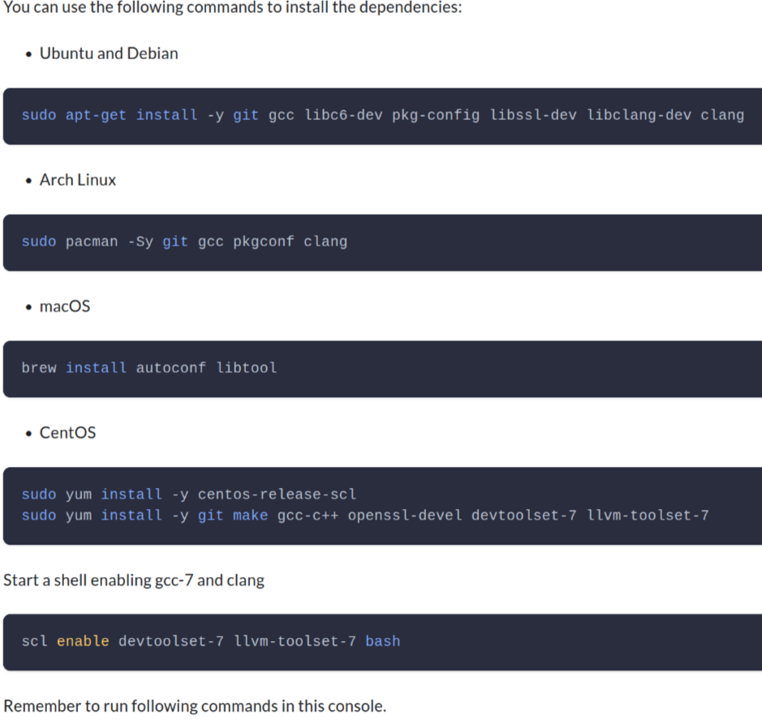

How we build and deliver software today
To build a some non-trivial package, we need
tell people to apt install lib*-dev
A respectable project should give all the instructions for developers on all the platforms

cgo is not go
Fuck it, I am done with this shit. I will just use go, a self-sufficient garden. Of course, cgo is not go. BTW, jni is not java (whose motto is “Compile once, run everywhere”). What about sqlite?
ad hoc solutions
- bazel build
- crosdev
docker for the win
Inspired by a true story
Building it with docker (almost reproducibly)
╭─e@aol ~/Workspace/repo1 ‹master●›
╰─$ make all-via-docker 2 ↵
docker run --rm -v `pwd`:/code example/riscv-gnu-toolchain@sha256:89168b4b109a0f741078a71b7c4dddaf1d283a5244608f7851f5714fbad273bb bash -c "cd /code && make"
cd deps/secp256k1 && \
./autogen.sh && \
CC=riscv64-unknown-elf-gcc LD=riscv64-unknown-elf-gcc ./configure --with-bignum=no --enable-ecmult-static-precomputation --enable-endomorphism --enable-module-recovery --host=riscv64-unknown-elf && \
make src/ecmult_static_pre_context.h src/ecmult_static_context.h
libtoolize: putting auxiliary files in AC_CONFIG_AUX_DIR, 'build-aux'.
libtoolize: copying file 'build-aux/ltmain.sh'
libtoolize: putting macros in AC_CONFIG_MACRO_DIRS, 'build-aux/m4'.
libtoolize: copying file 'build-aux/m4/libtool.m4'
libtoolize: copying file 'build-aux/m4/ltoptions.m4'
libtoolize: copying file 'build-aux/m4/ltsugar.m4'
libtoolize: copying file 'build-aux/m4/ltversion.m4'
libtoolize: copying file 'build-aux/m4/lt~obsolete.m4'
What if I want to clean up the dirt
╭─e@aol ~/Workspace/repo1 ‹master●›
╰─$ make clean
rm -f *.o
rm -f src/*.o
rm -f src/*.lo
rm -f src/asm/*.o
rm -f src/asm/*.lo
rm -f src/java/*.o
rm -f src/java/*.lo
rm: cannot remove 'build/secp256k1_data_info.h': Permission denied
rm: cannot remove 'build/dump_secp256k1_data': Permission denied
make: *** [Makefile:88: clean] Fehler 1
╭─e@aol ~/Workspace/repo1 ‹master●›
╰─$ sudo make clean 2 ↵
rm -f *.o
rm -f src/*.o
rm -f src/*.lo
rm -f src/asm/*.o
rm -f src/asm/*.lo
rm -f src/java/*.o
rm -f src/java/*.lo
cargo clean
error: no override and no default toolchain set
make: *** [Makefile:92: clean] Fehler 1
Now you have two problems
╭─e@aol ~/Workspace/repo2 ‹master●›
╰─$ make all-via-docker 130 ↵
docker run --user 1000:100 --rm -v `pwd`:/code example/riscv-gnu-toolchain@sha256:bbe8a3f79705f67d505d1f1d5ddc694a4fd537ed1c7e9622420a470d59ba2ec3 bash -c "cd /code && make"
riscv64-unknown-linux-gnu-gcc -fPIC -O3 -nostdinc -nostdlib -nostartfiles -fvisibility=hidden -I deps/c-stdlin -I deps/c-stdlin/libc -I deps -I c -I build -Wall -Werror -Wno-nonnull -Wno-nonnull-compare -Wno-unused-function -g -Wl,-static -fdata-sections -ffunction-sections -Wl,--gc-sections -fPIC -fPIE -pie -Wl,--dynamic-list c/dual.syms -o build/all_dual c/all_dual.c
╭─e@aol ~/Workspace/repo2 ‹master●›
╰─$ make docker-interactive 2 ↵
docker run --user 1000:100 --rm -it -v "/home/e/Workspace/repo2/:/code" --workdir /code --entrypoint /bin/bash example/riscv-gnu-toolchain@sha256:bbe8a3f79705f67d505d1f1d5ddc694a4fd537ed1c7e9622420a470d59ba2ec3
I have no name!@676a64b349b0:/code$ bear -- make
bash: bear: command not found
I have no name!@676a64b349b0:/code$ apt install bear
E: Could not open lock file /var/lib/dpkg/lock-frontend - open (13: Permission denied)
E: Unable to acquire the dpkg frontend lock (/var/lib/dpkg/lock-frontend), are you root?
I have no name!@676a64b349b0:/code$ sudo apt install bear
bash: sudo: command not found
I have no name!@676a64b349b0:/code$
But this is not enough
exotic toolchains, complex build time dependencies, cross compiling, static linking
╭─e@aol ~/Workspace/repo2/tests/master ‹master●›
╰─$ cargo build
Compiling example-tests v0.5.4 (/home/e/Workspace/repo2/tests/master)
error: failed to run custom build command for `example-tests v0.5.4 (/home/e/Workspace/repo2/tests/master)`
Caused by:
process didn't exit successfully: `/home/e/Workspace/repo2/tests/master/target/debug/build/example-tests-24343d618735db19/build-script-build` (exit status: 101)
--- stderr
thread 'main' panicked at 'Unable to find libclang: "couldn't find any valid shared libraries matching: ['libclang.so', 'libclang-*.so', 'libclang.so.*', 'libclang-*.so.*'], set the `LIBCLANG_PATH` environment variable to a path where one of these files can be found (invalid: [])"', /home/e/.cargo/registry/src/github.com-1ecc6299db9ec823/bindgen-0.59.2/src/lib.rs:2144:31
note: run with `RUST_BACKTRACE=1` environment variable to display a backtrace
One more thing, how do you deliver your software?
- hire a army of debian packagers, arch packages and redhat packages (of course, for free)?
- just use docker, once more?
How nix can improve development workflow
No cheat, let’s start a new ubuntu VM
git clone git@github.com:contrun/talks.git
cd talks
# TODO: fix this
git checkout xxx
cd assets/nix
vagrant up
A little bit magic
nix build "/vagrant#pkgsCross.riscv64.vim"
qemu-riscv64 ./result/bin/vim
nix build "/vagrant#pkgsStatic.hello"
file ./result/bin/hello
More magic
production nix
Replit - How we went from supporting 50 languages to all of them TLDR: They used nix to make develop environtment for more than 50 languages.
real world software building
git clone https://github.com/njaremko/samael.git. Three notable things.
devlepoment time dependencies
Each developer has a life, whose quality matters. You can improve it with nix and direnv.
nativeBuildInputs = with pkgs; [ rustPackages.rust-analyzer rustPackages.stable.toolchain ] ++ commonNativeBuildInputs;command -v rust-analyzer cd samael command -v rust-analyzerbuild time dependencies
Before building this package, we need to generate rust bindings from c header files (basically a every complex compiler’s job). We need
libclang.so, obtaining which is easy.commonNativeBuildInputs = with pkgs; [ libiconv libtool libxml2 libxslt llvmPackages.libclang openssl pkg-config xmlsec ];echo $LIBCLANG_PATH cd samael echo $LIBCLANG_PATHruntime dependencies
Believe it or not, this is the hardest part. This is where the dependency hell is. Imagine A depends on openssl 1.1, B depends on openssl 3.0. What would you do to make A and B both works? To make things worse, what if A it self depends on B?
cd samael cargo test --features xmlsec ldd ./target/debug/deps/samael-*
Anatomy (some physiology lesson)
nix is a DSL compiler which compiles high level nix expressions to nix derivations
nix run "/vagrant#emacs" -- --batch --eval '(print system-configuration-options)' nix run "github:contrun/talks?dir=assets/nix#emacsNativeComp" -- --batch --eval '(print system-configuration-options)'nix derivations are intermediate represensations which describe how to build software (well more than that)
nixpkgs is an expert system which maintains a huge database of expressions to build softwares (well more than that)
Anatomy of a nix flake
flake.nixA mathematical function written in nix lang to transform inputs to outputs, where inputs are source code, outputs are description to things we want to build.flake.lockLikepackage-lock.json, but for generic source.
Anatomy of a nix derivation
nix show-derivation "$HOME/Workspace/infra#pkgsCross.riscv64.vim"
Anatomy of a typical nix package
Demostration
nix repl '<nixpkgs>'
Welcome to Nix 2.9.2. Type :? for help.
Loading '<nixpkgs>'...
Added 16706 variables.
nix-repl> hello
«derivation /nix/store/b7fpjb7dbyswq1ks41wwq5j7x9x9h9p8-hello-2.12.drv»
nix-repl> hello.meta
{ available = true; broken = false; changelog = "https://git.savannah.gnu.org/cgit/hello.git/plain/NEWS?h=v2.12"; description = "A program that produces a familiar, friendly greeting"; homepage = "https://www.gnu.org/software/hello/manual/"; insecure = false; license = { ... }; longDescription = "GNU Hello is a program that prints \"Hello, world!\" when you run it.\nIt is fully customizable.\n"; maintainers = [ ... ]; name = "hello-2.12"; outputsToInstall = [ ... ]; platforms = [ ... ]; position = "/nix/store/ngmq5s7v67mjy2w5yml3m224jw72xxw1-nixpkgs/nixpkgs/pkgs/applications/misc/hello/default.nix:34"; unfree = false; unsupported = false; }
nix-repl> hello.
hello.__ignoreNulls hello.out
hello.all hello.outPath
hello.args hello.outputName
hello.buildInputs hello.outputs
hello.builder hello.override
hello.configureFlags hello.overrideAttrs
hello.depsBuildBuild hello.overrideDerivation
hello.depsBuildBuildPropagated hello.passthru
hello.depsBuildTarget hello.patches
hello.depsBuildTargetPropagated hello.pname
hello.depsHostHost hello.propagatedBuildInputs
hello.depsHostHostPropagated hello.propagatedNativeBuildInputs
hello.depsTargetTarget hello.src
hello.depsTargetTargetPropagated hello.stdenv
hello.doCheck hello.strictDeps
hello.doInstallCheck hello.system
hello.drvAttrs hello.tests
hello.drvPath hello.type
hello.inputDerivation hello.userHook
hello.meta hello.version
hello.name
hello.nativeBuildInputs
nix-repl> hello.outputs
[ "out" ]
nix-repl> hello.out
«derivation /nix/store/b7fpjb7dbyswq1ks41wwq5j7x9x9h9p8-hello-2.12.drv»
nix-repl> hello.outPath
"/nix/store/k2wcigb78fsx3201kkr1290d9pdw4k74-hello-2.12"
nix-build '<nixpkgs>' -A hello
this path will be fetched (0.04 MiB download, 0.17 MiB unpacked):
/nix/store/k2wcigb78fsx3201kkr1290d9pdw4k74-hello-2.12
copying path '/nix/store/k2wcigb78fsx3201kkr1290d9pdw4k74-hello-2.12' from 'https://mirrors.tuna.tsinghua.edu.cn/nix-channels/store'...
/nix/store/k2wcigb78fsx3201kkr1290d9pdw4k74-hello-2.12
Peculiarities
- /nix/store
Filesystem Hierarchy Standard is bad.
- k2wcigb78fsx3201kkr1290d9pdw4k74-hello-2.12
nix build "/vagrant#emacs"
realpath ./result
nix build "/vagrant#emacsNativeComp"
realpath ./result
- the built binary
ldd ./result/bin/hello
linux-vdso.so.1 (0x00007ffcc89c8000)
libc.so.6 => /nix/store/ayrsyv7npr0lcbann4k9lxr19x813f0z-glibc-2.34-115/lib/libc.so.6 (0x00007f1c32321000)
/nix/store/ayrsyv7npr0lcbann4k9lxr19x813f0z-glibc-2.34-115/lib/ld-linux-x86-64.so.2 => /nix/store/ayrsyv7npr0lcbann4k9lxr19x813f0z-glibc-2.34-115/lib64/ld-linux-x86-64.so.2 (0x00007f1c32522000)
Anatomy of a nix building process
nix-shell '<nixpkgs>' -A hello
these 12 paths will be fetched (6.99 MiB download, 44.15 MiB unpacked):
/nix/store/8s2dv1q4x19cjj0j3f3318zqwnr4490m-bash-interactive-5.1-p16-info
/nix/store/9izhv7bayzj8sr7m5n7c4qw1qk2fhq9s-binutils-2.38
/nix/store/aq67a6bzcjyh6rcjj78miirqjl9rav72-gcc-wrapper-11.3.0
/nix/store/d5as7049v0l1gm0j6x6kv7jnkwx5gqmh-expand-response-params
/nix/store/mjv4xxiza91sxxvh81xa4a17kqss1alk-readline-8.1p2
/nix/store/mnlzywchssnw8y1xb3qsfv6ifrh503sy-bash-interactive-5.1-p16-doc
/nix/store/mrx063r275hqvi5ixb2zckzfyk1bvp2y-bash-interactive-5.1-p16-man
/nix/store/p3d2d5i526vsmdwiwchbcswy57gz7ipv-bash-interactive-5.1-p16-dev
/nix/store/s3lywc6f8xd9b4vdakp03mqlw1iknay5-stdenv-linux
/nix/store/wicpy8xpj34skkd76y95rfmg1l880qxm-ncurses-6.3-p20220507
/nix/store/wvfcmk36krxvxip5j9374h8h8flpa0ic-binutils-wrapper-2.38
/nix/store/zxn21d03iv66n147ff90j8m5mh5xl0x6-bash-interactive-5.1-p16
copying path '/nix/store/mnlzywchssnw8y1xb3qsfv6ifrh503sy-bash-interactive-5.1-p16-doc' from 'https://mirrors.tuna.tsinghua.edu.cn/nix-channels/store'...
copying path '/nix/store/8s2dv1q4x19cjj0j3f3318zqwnr4490m-bash-interactive-5.1-p16-info' from 'https://mirrors.tuna.tsinghua.edu.cn/nix-channels/store'...
copying path '/nix/store/mrx063r275hqvi5ixb2zckzfyk1bvp2y-bash-interactive-5.1-p16-man' from 'https://mirrors.tuna.tsinghua.edu.cn/nix-channels/store'...
copying path '/nix/store/9izhv7bayzj8sr7m5n7c4qw1qk2fhq9s-binutils-2.38' from 'https://mirrors.tuna.tsinghua.edu.cn/nix-channels/store'...
copying path '/nix/store/d5as7049v0l1gm0j6x6kv7jnkwx5gqmh-expand-response-params' from 'https://mirrors.tuna.tsinghua.edu.cn/nix-channels/store'...
copying path '/nix/store/wicpy8xpj34skkd76y95rfmg1l880qxm-ncurses-6.3-p20220507' from 'https://mirrors.tuna.tsinghua.edu.cn/nix-channels/store'...
copying path '/nix/store/wvfcmk36krxvxip5j9374h8h8flpa0ic-binutils-wrapper-2.38' from 'https://mirrors.tuna.tsinghua.edu.cn/nix-channels/store'...
copying path '/nix/store/mjv4xxiza91sxxvh81xa4a17kqss1alk-readline-8.1p2' from 'https://mirrors.tuna.tsinghua.edu.cn/nix-channels/store'...
copying path '/nix/store/aq67a6bzcjyh6rcjj78miirqjl9rav72-gcc-wrapper-11.3.0' from 'https://mirrors.tuna.tsinghua.edu.cn/nix-channels/store'...
copying path '/nix/store/zxn21d03iv66n147ff90j8m5mh5xl0x6-bash-interactive-5.1-p16' from 'https://mirrors.tuna.tsinghua.edu.cn/nix-channels/store'...
copying path '/nix/store/s3lywc6f8xd9b4vdakp03mqlw1iknay5-stdenv-linux' from 'https://mirrors.tuna.tsinghua.edu.cn/nix-channels/store'...
copying path '/nix/store/p3d2d5i526vsmdwiwchbcswy57gz7ipv-bash-interactive-5.1-p16-dev' from 'https://mirrors.tuna.tsinghua.edu.cn/nix-channels/store'...
[nix-shell:~]$ declare -f genericBuild
genericBuild ()
{
if [ -f "${buildCommandPath:-}" ]; then
source "$buildCommandPath";
return;
fi;
if [ -n "${buildCommand:-}" ]; then
eval "$buildCommand";
return;
fi;
if [ -z "${phases:-}" ]; then
phases="${prePhases:-} unpackPhase patchPhase ${preConfigurePhases:-} configurePhase ${preBuildPhases:-} buildPhase checkPhase ${preInstallPhases:-} installPhase ${preFixupPhases:-} fixupPhase installCheckPhase ${preDistPhases:-} distPhase ${postPhases:-}";
fi;
for curPhase in $phases;
do
if [[ "$curPhase" = unpackPhase && -n "${dontUnpack:-}" ]]; then
continue;
fi;
if [[ "$curPhase" = patchPhase && -n "${dontPatch:-}" ]]; then
continue;
fi;
if [[ "$curPhase" = configurePhase && -n "${dontConfigure:-}" ]]; then
continue;
fi;
if [[ "$curPhase" = buildPhase && -n "${dontBuild:-}" ]]; then
continue;
fi;
if [[ "$curPhase" = checkPhase && -z "${doCheck:-}" ]]; then
continue;
fi;
if [[ "$curPhase" = installPhase && -n "${dontInstall:-}" ]]; then
continue;
fi;
if [[ "$curPhase" = fixupPhase && -n "${dontFixup:-}" ]]; then
continue;
fi;
if [[ "$curPhase" = installCheckPhase && -z "${doInstallCheck:-}" ]]; then
continue;
fi;
if [[ "$curPhase" = distPhase && -z "${doDist:-}" ]]; then
continue;
fi;
if [[ -n $NIX_LOG_FD ]]; then
echo "@nix { \"action\": \"setPhase\", \"phase\": \"$curPhase\" }" 1>&$NIX_LOG_FD;
fi;
showPhaseHeader "$curPhase";
dumpVars;
local startTime=$(date +"%s");
eval "${!curPhase:-$curPhase}";
local endTime=$(date +"%s");
showPhaseFooter "$curPhase" "$startTime" "$endTime";
if [ "$curPhase" = unpackPhase ]; then
[ -z "${sourceRoot}" ] || chmod +x "${sourceRoot}";
cd "${sourceRoot:-.}";
fi;
done
}
Further references
How nix can improve software delivery
nix run
nix run github:contrun/wallabag-saver
Docker
- railwayapp/nixpacks: App source + Nix packages + Docker = Image
- Building and running Docker images — nix.dev documentation
nixops, nixos containers
NixOS